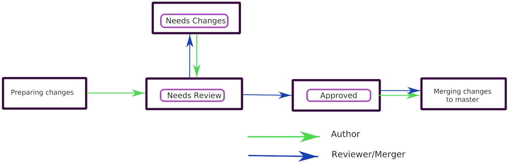

Introduction to Hacking Krita¶
目錄
Getting started with KDE Software¶
Krita is a great place to start even if you are brand new to KDE development. We'd love to have you join! You'll be able to work on one of the coolest and fastest-growing open source painting programs out there. Krita also benefits from a modular architecture and the use of the KDE Frameworks and Qt libraries, which makes it easier to focus on new features instead of reinventing the wheel. And it makes coding fun! To work on Krita, you have to use C++ and Qt. It's a good way to learn both, actually!
KDE has undergone big changes since a major 2014 reorganization. As a result, working with KDE software has never been easier. Unfortunately, since the changes were so widespread, the documentation has not caught up at all. If you are embarking on this journey, it would be very generous to share your discoveries with others and update pages. (=
Getting Started¶
Here's some links to get your started.
Most important, the repository. There is a mirror on Github, however note that we do not use Github for development, do not create pull requests or file issues on github.
KDE Developer wiki - The KDE Techbase Wiki has instructions for new developers. On top of basic tools like C++, git, and general notions such as building software libraries, some special tools that are particular to Krita are Qt, CMake, and KDE Frameworks. It can be very helpful to get started by finding some of the articles discussing these tools and reading up. Here are some of the more useful pages to get you started:
https://doc.qt.io/ Qt has some of the best documentation of any software library.
Set up your development environment and build Krita!
Find a few bugs to fix in KDE's Bugtracking system. It's often a good idea to get some experience with the code through fixing bugs, to get familiar with the development process without being overwhelmed. Though there's nothing against working on that cool feature that scratches your itch!
If you intend to be a regular contributor to Krita, even just for bugreports and feature discussion, the first thing you will want to do is register for a KDE Identity account. This serves as your mostly-universal login to KDE code repositories and websites.
Building Krita¶

To get started, all you need to do is get a copy of Krita and build it! This is not all that much different from building something off GitHub... except that Krita is very large compared to most software. There are build guides to get you going on various platforms, but of course Linux is easiest.
Working with the Krita codebase¶
Here's some pointers for working with our codebase.
- Architecture
The code base changes all the time with Krita, we're not afraid of big refactorings, so there is no up to date documentation on the code architecture. There have been some written in the past, but they quickly became outdated and of little use. There is a fairly up to date API guide if you want to look at how the code is structured.
- Integrated Development Environment (IDE)
The most popular IDEs that we use are Qt Creator, Emacs, KDevelop, or vim. Qt Creator has the advantage of the ctrl-k menu, which lets you leap to classes, lines, everywhere. You don't have to build with Qt Creator though! It can be easier to jump to the terminal, do a 'make', check what's up, and then jump back to the IDE.
- Resources
The most important step to learning the code is to really understand memory management: pointers, smart pointers and pointer arithmetic. This is something that Java and C# developers will need to spend a little more time understanding. Here are a couple resources to get you more familiar with C++ and Qt:
C++ in a Nutshell by O'Reilly (book)
Debugging¶
There are large and small problems. For small problems the debugger in Qt Creator (run external application) or adding qDebug messages to the code is fine. If the problem is difficult, the first step should always be to write a unit test. A small bit of code that follows a set pattern and exercises the faulty code and shows the problem. That helps so much figuring out a fix and keeping it fixed.
When you run a debug build of Krita, you may be surprised how little debug output you see. This is because most of Krita's debugging information is turned off by default. The debug statements are grouped into categories such as dbgUI, dbgKrita and so on. The output categories are controlled by an environment variable QT_LOGGING_RULES.
The list of Krita's debug categories is contained in kis_debug.h and main.cc, and the rules for the environment variable are described in the Qt reference for QLoggingCategory.
As an example, to enable most of Krita's debug output, you can run the following:
export QT_LOGGING_RULES="krita*=true"; krita
Using the rule *=true will produce a firehose, if you want it.
Tips when Tackling Issues¶
- Features and Refactorings
Sometimes you just know that a lot of work is going to be needed to reach a particular goal. These will go in separate feature branches off 'master'.
- Performance Improvements
Sometimes you don't feel like working on a feature -- or someone mentioned something being particularly slow. The first thing to do then is carry out that scenario when Krita runs under callgrind and vtune. These tools show bottlenecks at the end of a run. It's important to use both, since both give different insights!
- Bugs
Sometimes you rummage around the bugs on b.k.o to see what looks like a nice Saturday morning fix. Sometimes a bug is really urgent (like all data loss bugs). Sometimes someone on IRC or the forum mentions a bug. The first thing to do is reproduce it. The second thing is to look in the code to see what is going on. If it's a crash bug, especially one that seems mysterious, it might help to google for a few of the key lines in the backtrace. Sometimes it's a distribution issue!
- Blockers
If you are helping with Krita and your progress is being blocked by something - let us know! Talk with us on the Krita developer IRC and we will see what we can do to help!
Calligra and Krita¶
In October 2015, the Krita project separated from the rest of the Calligra office suite. The new repository still clearly contains this history. Most source code files will have one of two prefixes. "Ko" stands for KOffice, the original name of Calligra office suite. These files mostly comprise basic, lower-level libraries. "Kis" stands for KImageShop, the original name of Krita. These files are where most of the painting-specific functionality is maintained.
Krita 2.9 stable is built from the Calligra repo. Krita 3.x and above is built from the Krita repo.
Style guidelines¶
See HACKING in the codebase.
Development Philosophy¶
Krita is nearly ten years old, consists of something like a million lines of code, and has had many individual contributors throughout the years. If you run into something in the code that doesn't make sense to you, it may very well not make sense to anyone. Developing a codebase this large is an art form, you should feel confident in making risky changes even if you're not sure they'll work, you can always go back with git checkout -- * if you mess it up!
Getting in Touch¶
If you're working on a bug fix, or maybe a bit of GUI polish, you might get stumped. The best thing to do then is to get in touch with the rest of the Krita team. Part of the fun of working on an open source application is the community, after all! Join us on #krita on Libera.Chat (keep in mind that most people are in Europe or India) and just ask your question. Stay around, especially if you don't get an answer immediately. Some of the developers have their irc client open permanently and will often answer questions hours later!
You can also send mail to the mailinglist: kimageshop@kde.org. It's better not to send mail to individual developers directly, you might accidentally pick someone who hasn't got the answer, and miss the chance of getting your question answered by another Krita developer.
Contributing Patches¶
Patch review and development tracking happens on gitlab. To log in, enter your KDE Identity in the LDAP login field. You can join the Krita: Next. If you are used to Github, the transition to gitlab is not difficult, but it is slightly different.
To push to invent.kde.org, you will not need to have SSH access setup, but you do KDE identity account. If several of your merge requests are accepted, you can get a commiter's account, which will allow you to push directly to the repositories. You can read more about that here: Getting a developer account
注意
Since moving to the gitlab instance, we don't use git@git.kde.org:krita but rather git@invent.kde.org:graphics/krita. Gitlab will not be able to see your commits if you push to the former. You can use git remote set-url origin git@invent.kde.org:graphics/krita to get everything pointing correctly.
So then, how does an aspiring contributor submit patches?
Forking on Gitlab¶
Forking on gitlab is done by going to the repository and pressing fork. You will then make a personal fork of the repository.
Your fork will probably be located here:
https://invent.kde.org/<username>/krita
In your fork, you press clone to get the git urls to do the
git clonefrom. You can then pull and push your commits from these.# for ssh access git clone git@invent.kde.org:<username>/krita.git # for https access git clone https://invent.kde.org/<username>/krita.git
You can also use the Web IDE to make your changes directly on invent.kde.org, but because Krita is a c++ program, we don't recommend this outside of typo fixes and doxygen documentation strings. You wouldn't be able to see the effect of your changes, after all!
Set up a new remote which points to the official repository, so you'll be able to update your local master branch.
# for ssh access git remote add upstream git@invent.kde.org:graphics/krita.git # for https access git remote add upstream https://invent.kde.org/graphics/krita.git
After that, you can see all of your urls using:
git remote --verbose
As you can see, origin points to your fork, while upstream points to the official repository.
Create a new branch and checkout to it.
git checkout -b "<username>/<description of the new feature>"Make your first fix, push everything to your branch in your fork.
# make sure you didn't leave any unnecessary debug or unfinished code git diff # stage all changes git add . # make sure that all added files are the ones you want to have in your commit git status # commit changes (here, write a commit messages that follows the rules) git commit # push to your branch git push
注意
Make sure all of your commits go to your own branch, not onto master.
Once you're done, login to the KDE gitlab instance, go to and press new merge request
Make sure your merge request is between the branch from your fork and the official master branch.
Write a detailed description about the changes that you are proposing with your merge request. If it is a change in the user interface, it would be good if you can provide screenshots through attachments.
小訣竅
The Krita repository has a merge request template that labels your request appropriately and gives a checklist of common formalities that all patches should adhere to. You can select it from the Template drop down.
The Krita developers will be notified of new merge requests, and they will try to review your request as soon as possible. If you suspect your patch slipped through the cracks, don't hesitate to contact us through the means described above.
Update the master branch in your fork¶
After working for some time, you may want to update the master branch of your fork to be in sync with the master branch of the official repository.
Checkout the master branch in your working environment.
git checkout master
Pull changes from the official repository.
git pull --ff-only upstream master
Push it to your fork.
git push
The other possibility is to just delete the fork you worked previously on and create another one -- it will be up-to-date with official repository's master branch already.
Label workflow¶
Make sure the state of your merge request is labeled correctly. The picture below shows the basic label workflow that your merge request should go through:
{kind=link}
When you create a merge request, mark it with WIP to make sure no one will accidentally merge your request prematurely.
When you finish your work, label it with
Needs Review. That will let developers know your merge request is ready.A Krita developer will read and test your merge request. After that they will write comments and label the merge request accordingly:
If the merge request is ready to be merged, with
Approvedlabel.If it requires changes to proceed, with
Needs Changeslabel.
If your merge request is in
Needs Changesstate, please address the concerns of the reviewer and submit the code to your branch. Gitlab will update your merge request accordingly. AddNeeds Reviewlabel to your MR again.When your merge request is in the
Approvedstate, you can either merge the code yourself to master if you have developer access, or wait for KDE developer to do it for you.注意
If you have developer access and merge someone's merge request to the repository, you are partially responsible for the code.
Don't merge MRs that weren't approved!
Read and test extensively all MRs before you approve or merge!
備註
In time of writing, setting labels on merge requests were only possible by contributors with write access to the official repository. (If you don't know what that means, that probably means you're not one of them). Because of that, when you create or change your merge request you need you get on IRC (see Krita 的社群) and ask someone to label it for you.
How to prepare your commits for a merge request¶
After merging to master, your commits should fit nicely in the Krita git history.
Commit messages should clearly and concisely state what changes you made with that particular commit and why -- see How to Write a Git Commit Message.
Every commit should be compilable and follow the KDE commit guidelines -- see KDE Commit Policy.
Commits should be self-contained: if you code a bigger feature, it's better if you divide the code into bits that can possibly exist independently.
When you add new features during the development, it's fine to add new commits.
If you only need to fix previous commits, don't add new ones -- instead, amend the ones that you made before and force-push your new commits to the branch in your fork.
# if you already committed your changes... git commit # ...add all changed files the "staged" state git add . # and amend the previous commit git commit --amend
備註
You can only force-push to your own branch on your own fork. If you need to remove changes from one of the commits that are already in the official repository, please use
git revert.When you want to reduce the number of commits:
you can squash them before making a merge request.
if you have developer access, you can squash the commits just before merging with master.
See the Beginner's guide to rebasing and squashing for further guidance.
Your work should go to a new branch, instead of master.
Your commits will be rebased and put in master using fast-forward merge. If you need a manual merge (if, for example, you're working on a big feature) and you don't have the commit access, please contact a Krita developer.